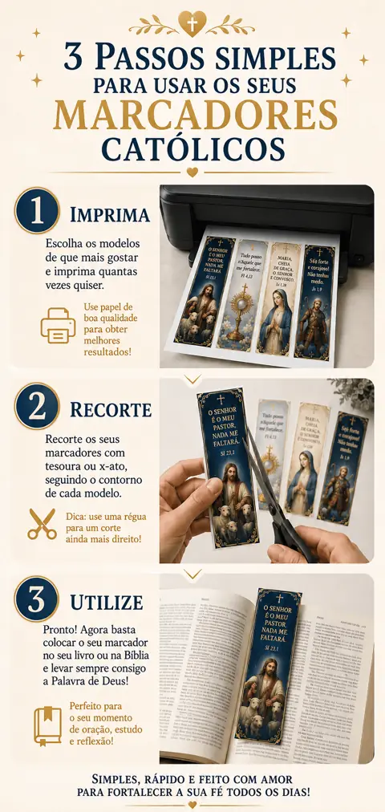
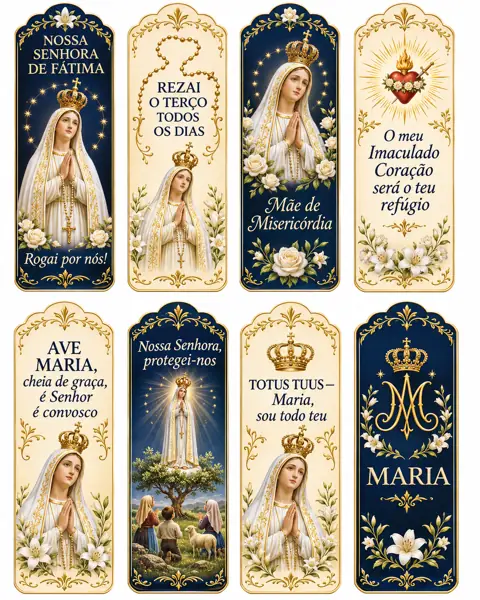
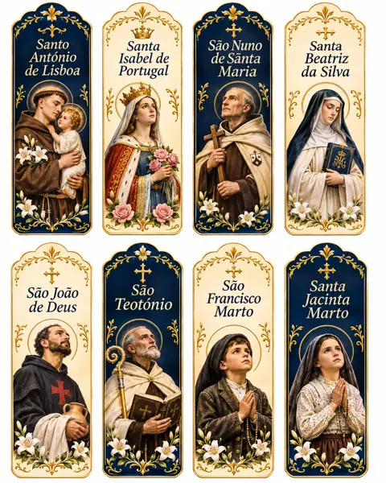
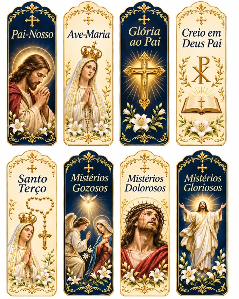
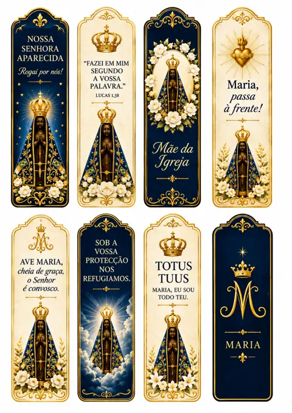

Opiniões de quem já usa os marcadores na Bíblia e nos livros
“Queria agradecer-vos pelos marcadores. São ainda mais bonitos do que estava à espera! Já imprimi alguns para a minha Bíblia e ficaram lindíssimos. Adorei os pormenores e as imagens de Nossa Senhora. Muito obrigada!”
“Já tive oportunidade de imprimir os marcadores e gostei bastante do resultado. São muito bonitos e foi tudo muito simples de preparar. Já ofereci alguns à minha mãe e ela ficou mesmo contente. Muito obrigado pelo vosso trabalho!”
“Venho só agradecer pelos marcadores maravilhosos! Imprimi alguns ontem e hoje já levei um comigo para a missa. As imagens são lindas e ficaram com uma qualidade excelente. Vou imprimir mais para oferecer à família. Muito obrigada, de coração!”
“Queria deixar-vos uma mensagem para agradecer. Gostei muito da coleção, principalmente dos marcadores com os Salmos e com São Miguel Arcanjo. Já imprimi vários e ficaram muito bem. É uma forma muito bonita de acompanhar a leitura da Bíblia. Parabéns pelo trabalho!”
Do telemóvel ou do computador para as suas mãos em poucos minutos

Recebe os ficheiros PDF por email logo após o pagamento.
Em casa ou na papelaria, em papel de gramagem mais grossa.
Pronto para o livro, o missal ou para oferecer a quem mais gosta.
Um pequeno gesto que acompanha a leitura e a oração todos os dias
Lembranças para a Primeira Comunhão, o Crisma e o fim do ano de catequese.
Para ensinar as orações aos mais novos e partilhar a fé em família.
Para oferecer em retiros, peregrinações, festas e grupos de oração.
Leve a fé de casa para onde estiver, em França, na Suíça, no Luxemburgo ou noutro país.
Ilustrações delicadas, cores suaves e mensagens que tocam o coração




Uma coleção completa para acompanhar toda a sua vida de oração.
Ficheiros digitais em alta resolução, prontos a imprimir
2 bónus exclusivos + 2 bónus super premium
BÓNUS EXCLUSIVOS
+ 2 BÓNUS SUPER PREMIUM
Pagamento único • IVA incluído • Acesso imediato
Experimente sem compromisso. Se, por qualquer motivo, os marcadores não forem o que esperava, basta enviar um email nos 14 dias após a compra e devolvemos a totalidade do valor. Sem perguntas.
Logo após a confirmação do pagamento, recebe no seu email o acesso aos ficheiros PDF. Pode descarregá-los no telemóvel, no tablet ou no computador.
Não. Qualquer impressora a cores serve. Se preferir, leve os ficheiros a uma papelaria ou reprografia e peça a impressão em A4.
Recomendamos papel A4 de gramagem mais grossa (entre 180 g e 250 g) ou cartolina, para que os marcadores fiquem firmes e durem mais tempo.
Sim. Pode imprimir para si, para a família, para o grupo de catequese ou para a paróquia, sem limite. Apenas não é permitida a revenda dos ficheiros.
Pode, claro. O produto é digital e funciona em qualquer país: França, Suíça, Luxemburgo, Alemanha, Reino Unido ou onde estiver.
MB WAY, referência Multibanco, cartão de crédito ou débito e PayPal. O pagamento é feito numa plataforma segura.
Tem 14 dias de garantia. Basta enviar-nos um email dentro desse prazo e devolvemos a totalidade do valor.
150 marcadores prontos a imprimir, para guardar no seu missal ou oferecer a quem mais gosta.
QUERO OS MEUS MARCADORESUsamos cookies de medição. Saber mais